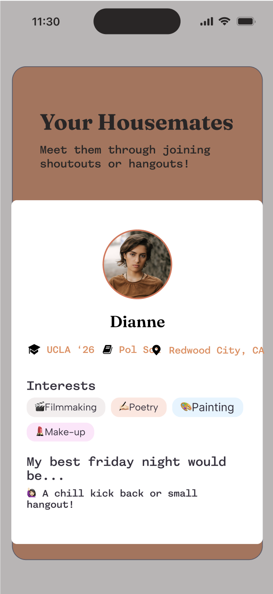
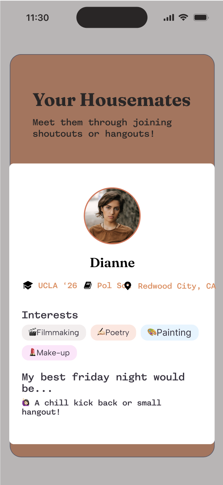
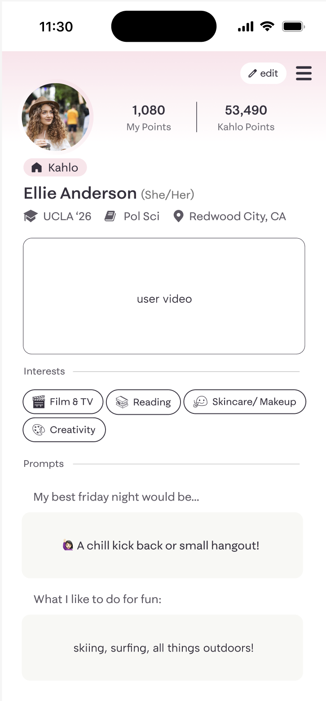
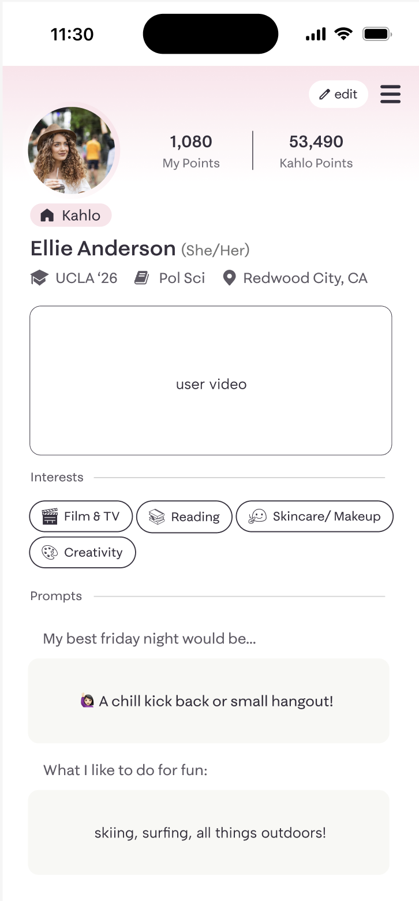

project overview
Quilly is a first-of-its-kind platform made for college women and anyone who vibes with a femme-centered space. It's all about building real community, finding your forever friends, and getting through college with a little more style (and a lot less stress).
Think of Quilly as your go-to pocket guide for college life—whether you're looking for new connections, local events, or just a place where you feel seen. It's designed to help you show up, plug in, and never miss out on the moments that matter. With Quilly, FOMO doesn't stand a chance.


 



 
